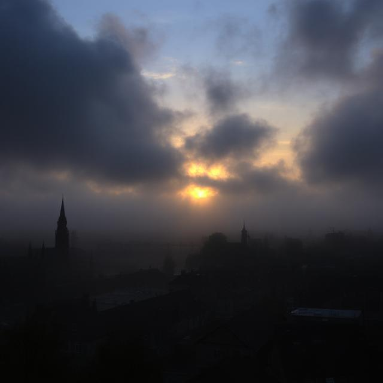

Хапещият вятър на Рейвънфорд дращеше палтото на Джо, когато той слязъл от треперещия влак. Градът, разположен в долина, вечно потопена в здрач, изглеждал древен. Каменните сгради се прилепвали една към друга като шепнещи съзаклятници, прозорците им тъмни и тайнствени. Рейвънфорд беше красив, несъмнено, но под повърхността имаше студено, скрито течение. Хора изчезваха тук. Не в суматохата на голям град, а тихо, чисто, от леглата им. Джо, журналист с наклонност към необяснимото, бил дошъл в Рейвънфорд, преследвайки следа, шепот за прокълнат град. Местните предлагали малко. Лицата им били като изсечени маски, очите им избегвали погледа му. "Не задавайте въпроси, чуждоземец," изхриптяла една стара жена в хана. "Рейвънфорд пази собственото си мнение." Легендата говорела за мистичните руини извън градските стени, останки от забравена цивилизация. Те били наричани източник на проклятието, място, където вратата между световете била тънка. На втория ден, Джо бил в забравен ъгъл на библиотеката на Рейвънфорд, вдъхвайки миризмата на разлагаща се хартия. Търсел всичко – всякакви споменавания на изчезванията, на руините, нещо, което да пробие стената на мълчанието. Там срещнал Зак. Зак бил млад мъж с очи, които изглеждали да държат столетия знания. Той бил самопровъзгласен мъдрец, учен на забравени учения, и за разлика от другите жители, бил готов да говори. "Магия," казал той с тих глас. "Това е, което тегне на Рейвънфорд. Древен ритуал, който се объркал." Той разказал за церемония, извършена преди векове, с цел да свърже града с източник на сила. Но нещо се объркало, жертва незавършена, неправилно произнесена дума. Сега, всяка нощ, ритуалът се повтарял, вземайки души, за да завърши свързването. Зак повел Джо към руините. Изкривени колони от обсидиан се издигали към небето, изписани с символи, които сякаш се движели в полумрака. Той посочил на разрушаващ се олтар. "Тук," казал той, с тих глас. "Тук се случи." Докато разглеждали руините, от сенките се появил силует. Бил мъж с поразителна красота, очи като ледени късове и аура на без усилие власт. Леон, благородник от Рейвънфорд. Той се появявал всеки път, когато се случвало нещо... странно... "Закарий," казал Леон с гласа си, който бил гладък като кадифе, "винаги се месиш в неща, които не разбираш." После се обърнал към Джо, погледът му го оценявал. "А ти, чуждоземец, изглежда следваш погрешния път. Някои врати е по-добре да не се отварят." Джо усетил студ да премине по гръбнака му. Леон знаел нещо. Той знаел повече, отколкото издавал. Опитвал ли се да защити града, или бил част от самото проклятие? Джо бил разкъсан. Можел да се довери на Зак, ученика, който вярвал в магия и древни ритуали. Или можел да се довери на Леон, загадъчния благородник, който сякаш бил навсякъде, винаги наблюдаващ. Той решил да играе на две страни. Продължил да се среща със Зак, да учи за ритуала, за необходимите съставки, за заклинанията. Той също така започнал да търси Леон, да води внимателни разговори, да изследва слабости и да търси намеци за истината. Всяка следа го водела по-дълбоко в тайните на града, разкривайки история на жертви, предателства и сила, която била излязла извън всякакъв контрол. Той открил, че изчезванията не били случайни. Ритуалът избирал жертвите си, тези, които притежавали специфична енергия, определена... резонанс. Една нощ, Зак разкрил последното парче от пъзела. "Ритуалът," казал той, гласа му треперел, "изисква жертва с чисто сърце. Някой, готов да се отдаде за доброто на Рейвънфорд." Той погледнал Джо, очите му били пълни със странна смесица от надежда и страх. "Някой като теб." Джо се отдръпнал. Той не бил някакъв саможертвен герой. Той бил журналист, наблюдател. Но, когато погледнал в умолителните очи на Зак, видял отчаянието на град, който се държал за ръба на гибелта. Тази вечер Джо открил бележка под вратата си. Била от Леон. "Срещни ме при руините," пишело в нея. "Тази нощ ритуалът ще вземе следващата си жертва. Но не е нужно да бъдеш ти. Мога да го спра." Той отишъл при руините, сърцето му биещо силно в гърдите. Леон стоял пред олтара, облян в зловещото сияние на обсидиановите колони. "Знам за ритуала," казал Джо, почти шепнейки. "Зак ми разказа всичко." Леон се усмихнал, хладна, тревожна усмивка. "Разказа ли ти защо те наблюдавам? Защо те водих?" Изведнъж земята започнала да трепери. Символите на колоните започнали да пулсират с тъмна енергия. Въздухът изтрещял от сила. "Ритуалът започна," казал Леон. "А ти, Джоузеф, си ключът." "Какво имаш предвид?" запелтечил Джо. Леон пристъпил към него, погледът му пронизвал Джо. "Зак беше прав. Ритуалът изисква жертва, която да е готова. Но, което не знае той, е, че жертвата не трябва да бъде чиста. Тя само трябва да вярва, че е така." Той вдигнал ръка и Джо почувствал вълна енергия, която го обляла. Той се почувствал... различен. Усилено. Разбрал. Ритуалът не бил просто за взимане на живот; бил за използване на потенциал. И Леон го бил манипулирал, водил го, подготвял го. Той бил пешка в игра, която дори не разбирал. "Виж, Джоузеф," казал Леон, почти мило. "Ти дойде тук да търсиш история. Но ти стана част от нея." Последното, което Джо видял, бил триумфалният усмивка на Леон, преди тъмнината да го погълне, и той станал част от самата мистерия, която бил дошъл да разгадае, още една душа изгубена в тайните на сенчестия град. Той вече не бил Джо, журналиста. Той бил енергията, катализаторът, горивото, което щяло да захранва Рейвънфорд за още едно поколение. Рейвънфорд го бил взел. И в неговата тишина, градът продължавал да шепти своите тайни на вятъра.
